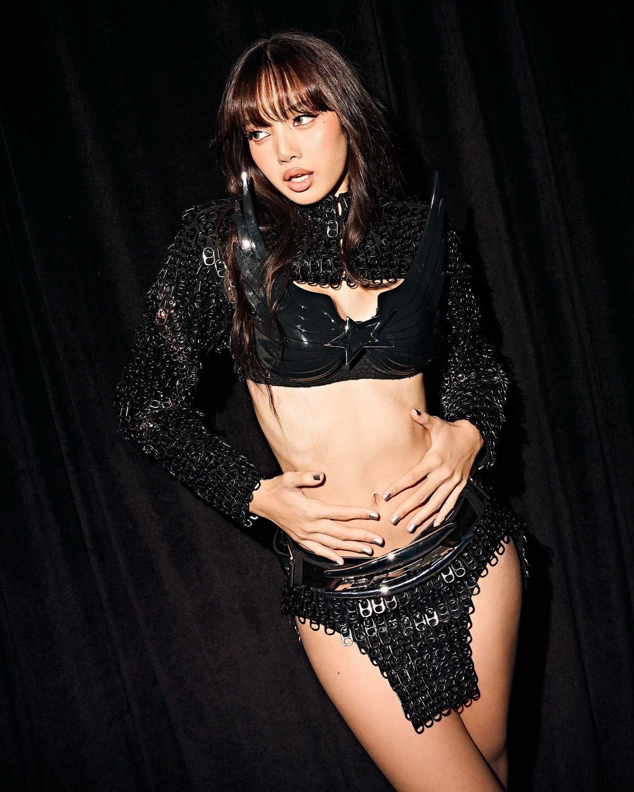
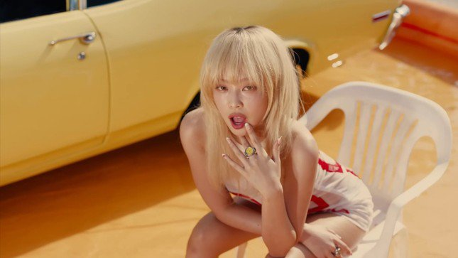
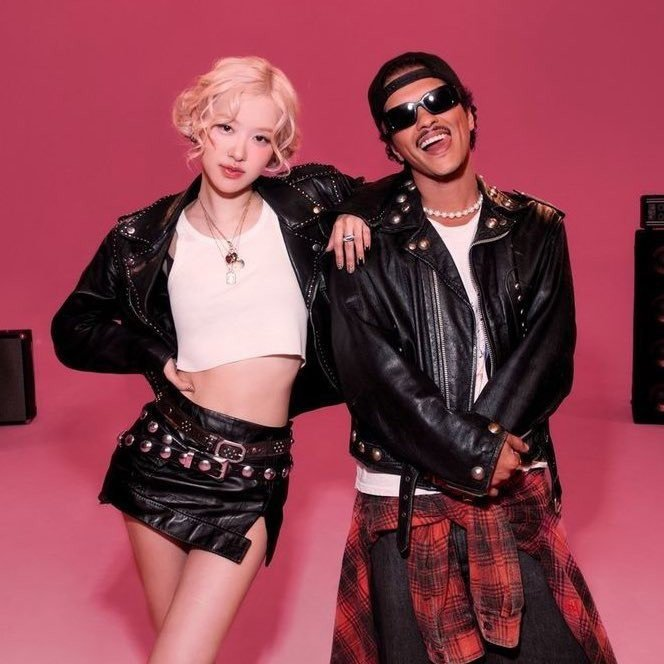

TIN TỨC
Lisa (BlackPink) bị mỉa mai ế vé

Là thành viên đầu tiên của BlackPink tổ chức tour fan meeting toàn cầu sau 8 năm hoạt động, Lisa đang đứng trước nguy cơ ế vé.xem chi tiết
Liz Kim Cương lột xác thành người khác
Liz Kim Cương phá bỏ vùng an toàn, quyết "lột xác" với diện mạo táo bạo chưa từng thấy.xem chi tiết
Ca khúc mới của Jennie (BlackPink) bị cấm sóng
Đĩa đơn mới nhất của Jennie, BlackPink, bị đài KBS ra lệnh cấm do vi phạm quy định về kiểm duyệt phát sóng.xem chi tiết
MV mới Jennie (BlackPink) bị chê tình dục hóa

MV “Mantra” của Jennie nhận về hơn 6,76 triệu lượt xem chỉ sau 9 tiếng ra mắt, với vô số lời khen từ người hâm mộ. Tuy nhiên, một bộ phận khán giả cho rằng đó là tác phẩm đáng quên, bị tình dục hóa.xem chi tiết
Mỹ Tâm và hơn 100 nghệ sĩ quốc tế sẽ trình diễn tại HOZO 2024
Ngày 15/10, Liên hoan Âm nhạc Quốc tế TPHCM lần 4 (Ho Chi Minh City International Music Festival 2024 - HOZO 2024) chính thức khởi động.xem chi tiết
Concert 'Anh trai say hi' gây tranh cãi về thông tin số vé bán ra

Công bố có tổng cộng 78.000 khán giả xem hai đêm concert, nhà sản xuất 'Anh trai say hi' bị chỉ trích 'phông bạt', đưa ra con số quá lớn so với thực tế.xem chi tiết
Rosé (BlackPink) vượt mặt Lisa và Jennie

Lisa, Jennie và Rosé đều gia nhập cuộc đua âm nhạc năm 2024 với tư cách nghệ sĩ solo. Trong khi hai người trước quảng bá rầm rộ cho sự trở lại, Rosé kín tiếng hơn nhưng lại mang đến cú nổ lớn, phá vỡ mọi kỷ lục mà tất cả thành viên BlackPink lập ra trước đó.xem chi tiết
Ca sĩ chỉ cần hát 3 bài đã cầm cát sê 1 tỷ

Theo người trong nghề, cụm từ "cát-sê tiền tỷ" tưởng chừng đơn giản, thực tế là kết quả của cả quá trình làm nghề gần như "không tưởng" của các ngôi sao.xem chi tiết
Sở Văn hóa nói về 2 show Anh trai

Sở Văn hóa và Thể thao TPHCM khẳng định 2 sự kiện âm nhạc "Anh trai say hi" và "Anh trai vượt ngàn chông gai" có quy mô không thua kém quốc tế.xem chi tiết
Ghế nóng Festival Piano Talent quy tụ nhiều nghệ sĩ nổi tiếng
Tiếp nối thành công của "Cuộc thi Piano mở rộng toàn quốc - Festival Piano Talent" mùa 1 diễn ra vào năm 2024, Viện Phát triển Giáo dục và Văn hóa Việt Nam tiếp tục phối hợp cùng Cục Văn hoá cơ sở - Bộ Văn hóa, Thể thao và Du lịch tổ chức mùa 2 cuộc thi.xem chi tiết